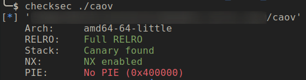

Binary Exploitation [pwnable.tw] - CAOV
Challange Description
| Name | CAOV |
| Points | 350 |
| Solves | 134 times |
| Libc | 2.23 |
| Category | Exploitation |
| Description | What does “CAOV” stands for? |
Binary Protection
Let’s check the binary protection

Since the binary has FULL RELRO enabled it we won’t be able to overwrite GOT table entry and it has PIE disable so we can use the GOT table entry to leak Libc address and if there are global allocated memory it can be helful to crate fake chunks.
Vulnerability
The vulnerability can be exploited by doing stack-reuse attack. The vulnerable part of the code is not visible in source code for that you will have to look at the decompiled code, which is shown below.
There are two class variables which are allocated on the stack with the size 48 bytes each. The default destructor on line 12 sets all the field of object old_data to null. The destructor at line 15 is overridden destructor, it free’s the key field of the object copy_class if it is not null. The copy_class object is read from the stack and that memory is not touched by any other piece of code before the calling the destructor, so if we can set the value of key field using stack-reuse and do arbitrary free.
To carry out the attack we can prime the stack with the set_name function which allows you to write data up to 150 bytes on the stack and when the edit function execute immediately after that, the key pointer field of the copy_class will pick the value from the stack.
With this attack, we are setting the key pointer of the copy_class with the fake chunk pointer which on free will be put into the fastbin’s freelist. The fake-chunk attack on fastbin will be used as write primitive this will be the basic primitive based on which other primitives will be constructed. The fake-chunk can be crafted in the bss section in the name variable and since the PIE is disabled the address of name variable is well-known in advanced.
The Read Primitive
The Data class has the field key is a pointer and on executing the show method of the class prints any value pointed by it. If we manage to change the value of the key pointer of the Data object we can do arbitrary read. And with the edit function, we can also change the value of the key field we also get arbitrary write.
But the looming question is how do we change the value of the key pointer. In the start of the application Data object is created and the reference of this object is stored on global memory. Since this memory is allocated using new operator it will be allocated on the heap. So if we manage to leak heap address we can calculate the object address from the base and rewrite the key field.
So this brings us to the next step, leaking the heap address. One simple way could be to allocate a large memory chunk and free it and reallocate and read the fd/bk pointer but all the memory writes made sure that they are with null-byte termination so this won’t work. If you look at the code closely you can see that in the edit function object data is printed before and after the edit. If we again craft a fake chunk and put it in the fastbin list which already has the free chunk then on printing the content of the object heap pointer will also be printed and then we can calculate the heap base from that by subtracting the offset.
Once we have the heap base address it’s not difficult the calculate than data object address. Once we know the data object address we can do a free on it using the stack-reuse attack discussed initially and allocate it immediately in the edit function and writing any value will set the key field. You can choose any function from the GOT table since the binary is compiled with FULL-RELRO all the function are resolved at the load time.
This concludes our memory leaking efforts. We have managed to leak heap base address using that we leaked the libc address. Next step is how do we get code execution? For that, we will need a write primitive, in the next section will discuss this.
Write Primitive
Creating write primitive should not be that difficult Since we have already used the write primitive previously to create the read primitive. Since we didn’t have the Libc address, we didn’t know the address of the target for a overwrite. So we had to do Libc leak first using the read primitive. To do arbitrary write we first have to free operation using the stack-reuse on the Data object which is already allocated on heap memory attack and in the edit function following that we allocate a new key with the length same as the fake-chunk size. This will return memory chunk from heap memory which has Data object data and then we will overwrite its key field with the overwrite target address.
Whenever a chunk is put in fastbin or removed from it there are chunk corruption check is done if the chunk falls in fastbin range which is 0x20-0x80 if not crash the program. Keeping this in mind whatever target address we choose has to fulfil this criterion. There are two such targets which come to my mind which might fulfil the above criteria, malloc_hook and free_hook. We can search memory nearby any of these hooks for fake chunk size. After some wandering around these hooks, malloc_hook seems to be the winner.
The memory area near malloc_hook there are the whole bunch of addresses (for eg 0x7fffff898972, etc) and if we try to fit a chunk with these value as fake chunk size we won’t succeed. So one neat trick that we can use is to select an address such that its fake chunk size value has MSB of 0x7f and rest of values as 0. This can be done by changing the alignment of the fake chunk address. The address which satisfies this is at malloc_hook-0x23. I have used the exact attack Post not found: binary-exploitation-pwnable-tw-level-secretgarden secret garden challenge as well.
Next thing you need to do is free the name array fake chunk with size 0x80. Now name array is in fastbin freelist and Since we can write data to it by edit name function we should write it with the address malloc_hook-0x23. By doing this we have managed to create two fake chunks in fastbin( size 0x80) freelist. The first and second fake chunk has size 0x80 and 0x7f respectively. Next, we will allocate two chunks and in the second allocation, we will get the overwrite.
For creating the Shellcode we can use one_gadget tool. There are a couple of gadgets which are list out of which the one at offset 0xef6c4 has worked for me.
Exploit Code
1 | from pwn import * |